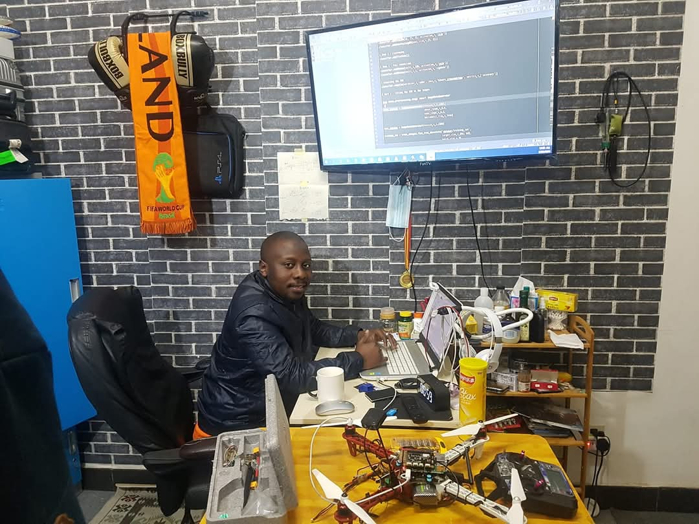
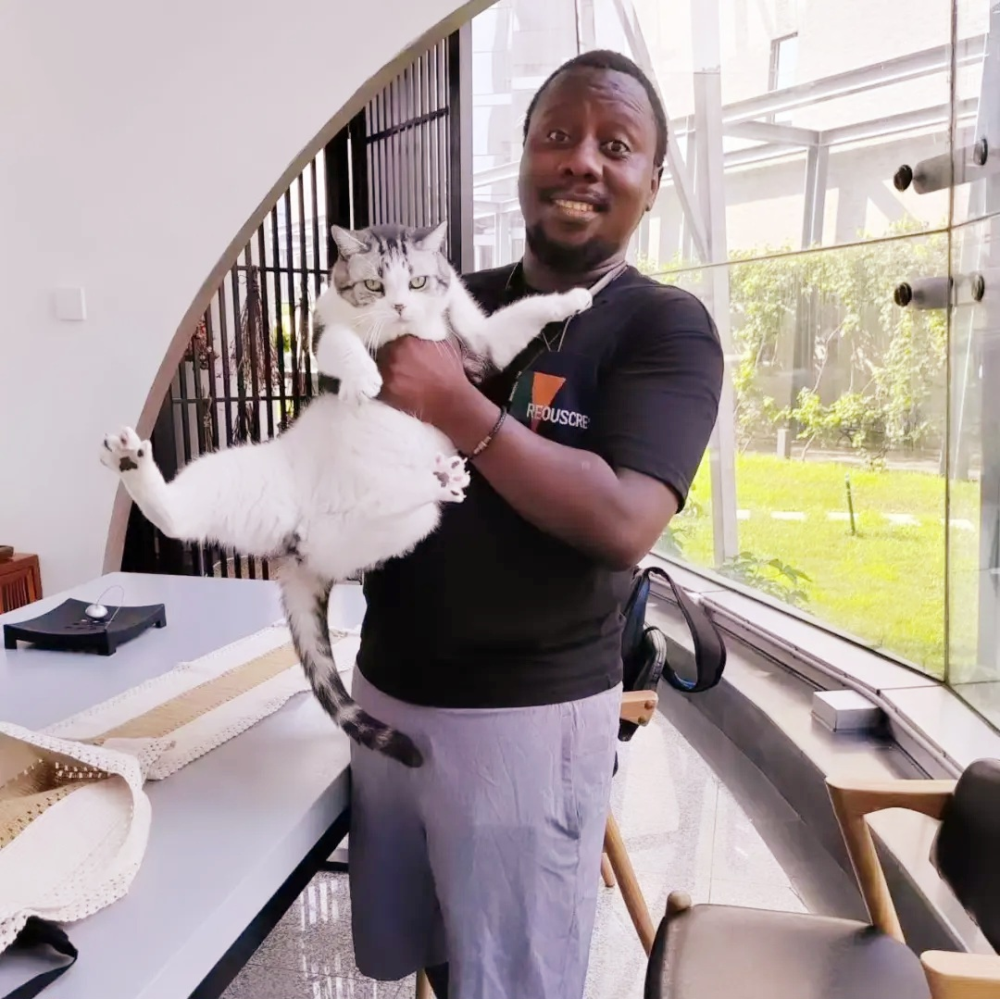
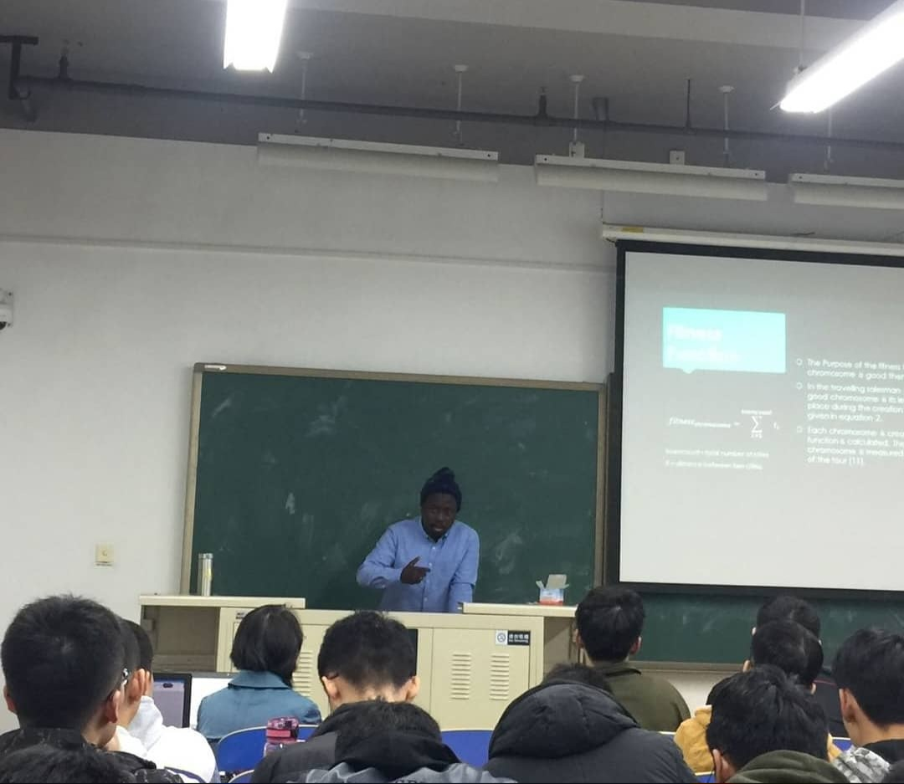

About
Yunusa is the founder of NewraLab, an AI research and development startup based in Suzhou, China, focused on building intelligent systems for autonomous technologies. With a PhD in Pattern Recognition and Intelligent Systems from Beihang University, he brings deep expertise in computer vision, generative models, and natural language processing.
He has published in and reviewed for top-tier venues including ACL, COLING, ACCV, ICMV, and ICCV, actively contributing to the global AI research community through peer review and collaborative research.
NewraLab is driven by his passion for advancing AI through rigorous research and translating breakthroughs into real-world solutions. Outside of work, Yunusa enjoys football and boxing — bringing the same discipline to his startup journey.
News
Our work on the synergies of hybrid Vision Transformers and CNNs was published in Engineering Applications of Artificial Intelligence. [link →]
MambaForGCN accepted at COLING 2025 — enhancing long-range dependency with SSM and Kolmogorov-Arnold Networks for ABSA. [link →]
KonvLiNA presented at ICMV 2024, Edinburgh — integrating KAN with Linear Nyström Attention for crop field detection. [link →]
Presented iiANET at ACCV Workshop — Computer Vision for Developing Countries, Hanoi, Vietnam. [slides →]
Publications
Gallery


